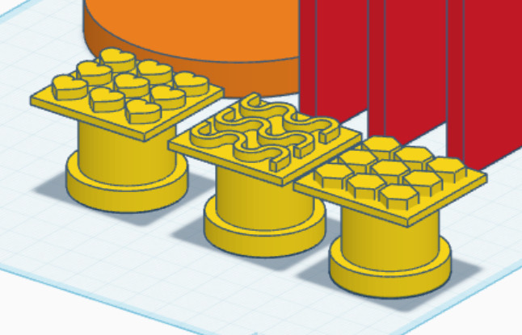

The Kreature Kit — Icebreaker for Collaborative Spaces
A hands-on icebreaker for the UTM Makerspace that uses playful making to help first-time collaborators form more natural connections.
- Role
- User testing and research synthesis
- Context
- UTM Makerspace — physical product for first-time collaborators
- Methods
- Think-aloud protocol, A/B testing, physical prototyping, observation and qualitative analysis

Overview
A physical icebreaker designed for the UTM Makerspace that uses playful, hands-on making to help first-time collaborators form more natural, meaningful connections. I led user testing and research synthesis to guide iteration from concept to final prototype.

Problem
First-time collaborators in makerspaces often rely on surface-level conversation and struggle to sustain interaction, making collaboration feel forced or awkward.
Research
Testing with first-time collaborators surfaced three patterns that shaped the kit:
- Conversation stayed surface-level and stalled after turn-taking
- Participants wanted prompts but not rigid scripts
- Shared activity reduced social pressure and awkward pauses
Prototyping & Testing
We explored a creature-building kit as a shared, low-pressure activity. Two versions were tested to compare dense instructions versus visual, goal-driven guidance.
- Prototype A: Text-heavy steps and detailed legends
- Prototype B: Visual cues with Create · Connect · Collaborate


Outcome
The simplified, visual prototype helped users understand the activity faster and sparked conversation during the making process itself.